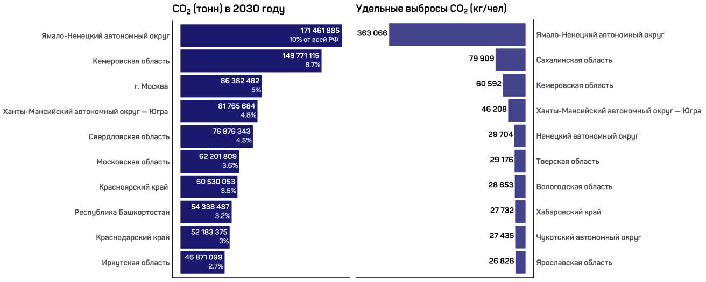

9 Аналитические работы
9.1 Анализ региональных выбросов: о бедном Кемерово замолвите слово
Топливно-энергетические балансы — кладезь информации для анализа ситуации в регионах. Выцепить можно многое: структуру потребления топливно-энергетических ресурсов; разделение на добывающих и покупателей; эффективность преобразований первичных ресурсов в электричество и тепло; энергоэффективность ТЭК, то есть долю конечного потребления в общем выпуске топлива — и так далее; вариантов — масса.
В том числе таблицы ТЭБ позволяют оценить объёмы выбросов парниковых газов, чем мы и займёмся в этой статье.
Источники и ограничения исходных данных
1) Данные имеются по всем регионам, кроме: Татарстан, Марий Эл, Челябинская область, Омская область, Магаданская область, Приморский край и Крым.2) Имеющиеся 78 таблиц распределены по годам следующим образом:
| Год | Таблицы ТЭБ |
|---|---|
| 2020 | 56 |
| 2021 | 10 |
| 2022 | 10 |
| 2023 | 1 |
| 2030, прогнозный | 1 |
| 78 |
Для первичных оценок они рассматриваются как датированные одним — 2020-м — годом. Так как ТЭБы от года к году меняются не особенно сильно, подобное допущение было сочтено невеликим грехом.
3) В таблице по Санкт-Петербургу отсутствуют сведения об электрической и тепловой энергии; по Самарской области представлен только газ.
4) Данные по численности населения и ВРП взяты у Росстата.
5) Коэффициенты перевода объёмов сжигаемого топлива в объёмы выбросов взяты из Распоряжения Минприроды России от 16 апреля 2015 г. № 15-р, Приложение 2 «Таблицы к методическим рекомендациям», таблица 1.2 «Рекомендуемые значения коэффициентов пересчета в энергетические единицы и коэффициентов выбросов диоксида углерода (т CO2/ТДж), метана (кг CH4/ТДж) и оксида диазота (кг N2O/ТДж) при стационарном сжигании топлива»
Согласно данным EDGAR суммарные выбросы CO2 по России составили 1 798 млн. тонн. По данным BP — 2 011 млн. тонн. Наши расчёты по 78 регионам показали 1 707 млн. тонн, то есть методика расчёта даёт схожий результат.
И половина всех выбросов приходится на 10 регионов:
Профили абсолютных и удельных значений несколько отличаются: например, Москва и Московская область в совокупности генерируют 7.3% общероссийских выбросов углекислого газа, однако за счёт многочисленности населения в топ-10 по удельным показателям не попадают. По итогу лидерами (или, учитывая контекст, антилидерами) можно назвать Ямало-Ненецкий автономный округ, Ханты-Мансийский автономный округ и Кемеровскую область.
В Ямало-Ненецком округе 140 млн. тонн выбросов CO2 из 164 (то есть 85%) приходятся на сжигание газа при добыче, обогащении и транспортировке. Тот же процент выбросов (65 млн. тонн из 77) приходится на газ и в Ханты-Мансийске, но при других источниках: сжигание при производстве электрической и тепловой энергии, использование в промышленности и транспорте.
А вот история Кемеровской области предсказуемо иная. Главным виновником выбросов углекислого газа является уголь. 144 млн. тонн из 160, то есть 91% от общих выбросов, приходятся на сжигание угля.
Следующим пунктом рассмотрим выбросы метана — в его случае половина выбросов так же приходится на 10 регионов:
Здесь Кемеровская область «лидирует» и по абсолютным значениям, и по удельным. Ямало-Ненецкий автономный округ показывает сравнительно невысокие абсолютные значения, но при расчёте на человека становится вторым — Сахалинская область в абсолютном рейтинге топ-10 не фигурирует вообще, однако по удельным показателям является третьей.
Алтайский край обязан своим вторым местом внушительному потреблению угля на нетопливные нужды, а в Забайкальском крае высокие значения связаны со сжиганием прочего твёрдого топлива (торфяные брикеты и полубрикеты, дрова и т. д.).
Выбросы от сжигания угля в Кемеровской области теперь составляют 96% от общего объёма — интересно снова посмотреть на раскладку по отраслям:
В отличие от выбросов CO2 для метана жилой сектор, сельское/лесное/рыбное хозяйство и рыбоводство являются основным источником — объём сжигаемого этими отраслями угля является самым низким, однако именно они из-за своей специфики выделяют больше всего метана на единицу сжигаемого топлива.
Наконец перейдём к оксиду диазота:
Кемеровская область снова «лидирует» и по абсолютным значениям, и по удельным — причём ещё более выраженно. Ямало-Ненецкий автономный округ тоже повторяет самого себя: демонстрирует сравнительно невысокие абсолютные значения, но оказывается на втором месте в удельных. Далее высокие значения показывает Хабаровский край: третье место в расчёте на человека, и пятое — для абсолютных.
Для N2O выбросы от сжигания угля в Кемеровской области составляют 97% от общего объёма — раскладка по отраслям выглядит следующим образом:
Распределение всех регионов представлено на интерактивном графике ниже — выбросы нормированы, используются логарифмические шкалы, размер кругов пропорционален численности населения региона:
Москва выделяется численностью населения и ВРП… а Кемеровская область — своими выбросами. Экологическая ситуация выглядит катастрофической при том, что, по нашим оценкам, перевод региона на газ или тепловую энергию положительно скажется не только на качестве жизни и здоровье людей, но и на экономике.
Газ дороже, но одновременно энергоэффективнее, то есть его требуется меньше — при замене угля на газ в конечном потреблении населения совокупная стоимость топливно-энергетических ресурсов снизится на 350 млн. рублей в год. Газификация сферы услуг сэкономит 40 млн. рублей в год, газификация промышленности на четверть (то есть с заменой четверти потребления угля на газ; так как полностью избавиться от использования угля невозможно, некоторые производственные процессы его требуют, для оценки была взята четверть) — 1.4 млрд. рублей в год.
Замена половины потребления угля на нетопливные нужды газом сэкономит 4.5 млрд. рублей в год; выбросы углекислого газа при этом снизятся на 10.6%, метана — на 9.6%, а оксида диазота — на 21%.
Выигрыш, так сказать, со всех сторон.
9.2 Анализ региональных выбросов: взгляд в будущее
В предыдущей статье мы рассмотрели региональные выбросы парниковых газов на фактических данных за 2020-й год — интересно попробовать заглянуть в будущее и оценить, насколько в перспективе ситуация изменится. Возьмём прогнозы региональных топливно-энергетических балансов до 2030-го года и рассчитаем выбросы в этот период.
Источники данных для прогнозирования
В основу модели легли социально-экономические данные регионов. Взят «инерционный сценарий», то есть предположение, что сохраняются текущие тенденции и технологии.
1) Данные по численности населения, доходам населения и ВРП взяты из Росстата.
2) Ретроспективные таблицы ТЭБ по России в целом также взяты из Росстата.
3) Данные по выручке предприятий и организаций взяты из бухгалтерских балансов ФНС.
4) Региональные таблицы ТЭБ имеют ограничения, описанные в предыдущем исследовании, в разделе «Источники и ограничения исходных данных».
И начнём мы с того, что заглянем в конец: сравним топ-10 регионов по выбросам углекислого газа за 2020-й год с топ-10 регионами в 2030-м — графики с фактическими данными за 2020-й для удобства перекопируем из прошлого исследования.

Лица всё те же, однако порядок несколько поменяется — любопытны удельные выбросы: у многих регионов они меняются «в пределах погрешности», и ярко выделяется «лидер» Ямало-Ненецкий автономный округ с относительным увеличением на целых 20.3%. Связано это с тем, что, по нашим прогнозам, добыча (как следствие, и транспортировка, и потери) являющегося главным виновником выбросов газа будет только увеличиваться — в то время как численность населения будет падать. Сложившись вместе, эти процессы дадут заметное изменение в удельном показателе.
Похожим образом обстоят дела и в Хабаровском крае: увеличение добычи и обогащения угля вкупе с уменьшением населения выльется в повышение удельных выбросов на 9.2%; а вот рост на 10.7% в Ненецком автономном округе будет вызван исключительно падением численности населения — добыча газа и использование топливно-энергетических ресурсов в целом будут только сокращаться.
Любопытно глянуть и на абсолютные значения в динамике — посмотрим, как будут двигаться наши «лидеры» в период 2020-2030 гг. (шкала Y, то есть значения выбросов, логарифмирована).
Условно регионы можно разделить на три группы:
а) Ямало-Ненецкий автономный округ и Кемеровская область, чьё первенство в объёмах выбросов углекислого газа неоспоримо, 18.7% всех выбросов России;
б) Москва, Ханты-Мансийский автономный округ и Свердловская область — вторая выделяющаяся группа, в сумме дающая 14.3% всех выбросов;
в) Московская область, Красноярский край, Республика Башкортостан, Краснодарский край, Иркутская область — так сказать, «лучшие из худших»: нижняя часть списка, в сумме дающая 16% всех выбросов; больше, чем вторая группа, однако делят они это число на пятерых.
И интересно здесь следующее. Во второй и третьей группе на первые места постепенно вырываются и к 2030-му году вырвутся Москва и Московская область соответственно.
Москва вырастет с 74 637 489 тонн до 86 382 482 тонн, то есть на 15.7% — и займёт в «антирейтинге» почётное третье место. Московская область — с 48 692 039 тонн до 62 201 809 тонн, на 27.7%.
И суммарно «Московская агломерация» в 2030-м году даст 148 584 291 тонн выбросов CO2, что почти равно значению второй в «антирейтинге» Кемеровской области.
Перейдём к метану — так же сравним топ-10 регионов по выбросам за 2020-й год с топ-10 регионами в 2030-м.
В удельных показателях Ямало-Ненецкий автономный округ вырастет на 16.2% и вырвется на первое место, обогнав Кемеровскую область, где удельное значение по сути не изменится. Связано это с тем, что хоть добыча угля в Кемеровской области, по нашим прогнозам, и будет расти, увеличиваться будет экспорт, а не конечное потребление или использование для преобразований (то есть использование для генерации электричества и тепла, обогащения угля, переработки газа и т.д.) — население будет падать вместе с конечным потреблением и преобразованиями, удельное значение, как следствие, не изменится. А вот в Ямало-Ненецком автономном округе, как уже говорилось, история иная: будет увеличиваться добыча газа, его переработка и сжигание при транспортировке — население вместе с конечным потреблением будет уменьшаться, но удельных выбросов на итог станет больше.
Посмотрим на динамику абсолютных значений по времени в период 2020-2030 гг. (шкала Y, то есть значения выбросов, снова логарифмирована):
Каких-либо любопытных сильных изменений не наблюдается: на 17.4% вырастет Москва, на 13.7% уменьшит выбросы метана Забайкальский край; на 16.8% сократит их Алтайский край (в первую очередь за счёт снижения потребления угля) — и на этом заметные отличия заканчиваются.
«Московская агломерация» в 2030-м суммарно даст 9501 тонн выбросов метана, то есть если рассматривать Москву и Московскую область вместе, в рейтинге они занимают третье место, ненамного уступая Алтайскому краю.
Наконец перейдём к оксиду диазота — снова начнём со сравнения «лидеров» в 2020-м и 2030-м годах.
В удельных показателях картина практически не поменяется: только Республика Коми поднимется на одно место, а место Забайкальского края займёт Бурятия. Значения изменятся в основном «в пределах погрешности» — за исключением Ямало-Ненецкого автономного округа с его увеличением на 18.2% по уже описанным причинам.
Рассмотрим динамику абсолютных значений выбросов оксида диазота за 2020-2030 гг. (шкала Y, то есть значения выбросов, логарифмирована):
В целом особых изменений не произойдёт, но заметно сокращение выбросов на 14% в Алтайском крае и увеличение на 14.6% — в Москве.
«Московская агломерация» суммарно даст 577 тонн выбросов оксида диазота, что обеспечивает ей четвёртое место.
При сохранении имеющихся тенденций к 2030-му году Кемеровская область и Ямало-Ненецкий автономный округ останутся лидерами по удельным значениям выбросов парниковых газов. Кемеровская область останется на первом месте (причём с большим отрывом от остальных) и по абсолютным значениям выбросов метана и оксида диазота — в случае углекислого газа Ямало-Ненецкий автономный округ и Кемеровская область останутся на первом и втором месте соответственно.
Стоит отметить, что абсолютные значения выбросов в Кемеровской области всех трёх газов снизятся, однако совершенно недостаточно для того, чтобы поменять расклад «лидеров» — и так как одновременно с этим снизится и численность населения, удельные значения останутся практически неизменными. А вот в Ямало-Ненецком автономном округе абсолютные значения, наоборот, возрастут, что вкупе со снижением численности населения приведёт к заметному увеличению удельных показателей.
Увеличатся выбросы парниковых газов в Красноярском крае и снизятся — в Алтайском, однако недостаточно для того, чтобы Алтайский край перестал занимать по метану второе место.
Наконец, значительно повысятся выбросы в Москве: увеличится население, увеличится генерация электрической и тепловой энергии, увеличится количество машин и общее конечное потребление — из-за высокой численности населения ни Москва, ни Московская область в лидерах по удельным показателям не фигурируют, однако вместе к 2030-му году по абсолютным значениям приблизятся к Кемеровской области в разрезе углекислого газа и к Алтайскому краю — по метану.
9.3 Ссылки на статьи на внешних ресурсах
- Математические основы градостроительного планирования
- Что такое цифровые двойники и где их используют. Журнал Тинькофф
- Энергомоделирование
Все права принадлежат ООО “Цифровой Двойник”
All rights reserved Digital twin LLC